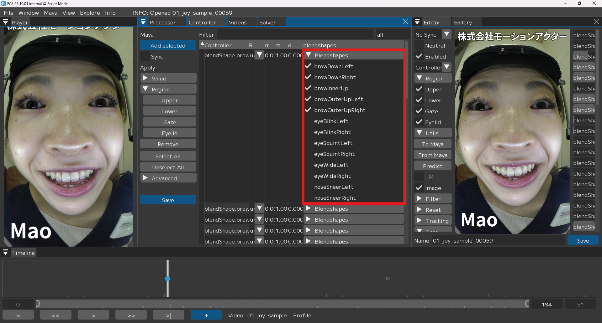
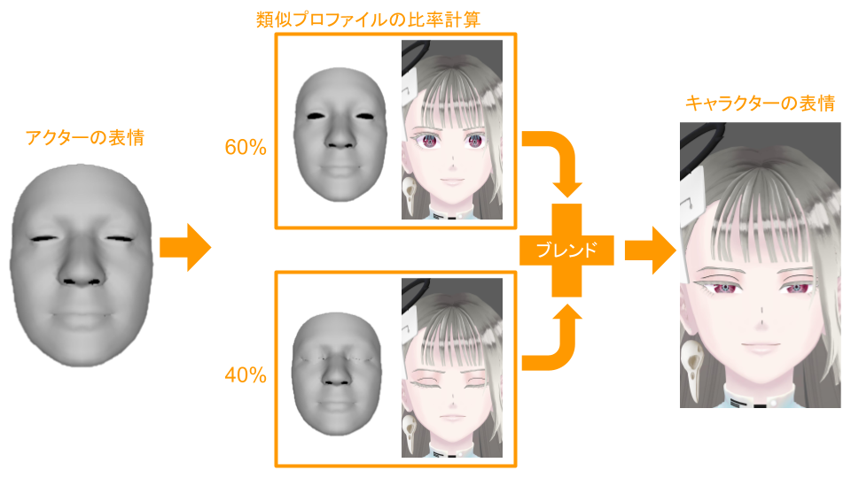

FCS内部の処理
このページでは、アクターの画像から表情をトラッキングし、キャラクターの表情を出力するまでの流れについて説明します。

アクターの画像に対しフェイシャルトラッキングを実行し (1) 、 顔の向きの補正 (2) やトラッキング情報を取捨選択 (3) の後、 キャラクターの表情が出力されます (4) 。
1. フェイシャルトラッキング
まず、画像からアクターの表情を取得するためにフェイシャルトラッキングを実行します。FCSのオートトラッキング機能では、画像に対してアクターの顔の3次元モデル（アクターモデル）を構築します。これにより、目や口の輪郭や鼻の位置を表す点（ランドマーク）の座標や、表情パラメータ（ARKitブレンドシェイプ）といった情報を取得します。
トラッキングに使用するモデルはパイプラインによって異なり、パイプライン名に"+"がついているものはツークン研究所の新規独自モデルになります。
2. 顔の向きを補正
激しい動作を伴う演技では、カメラの揺れなどにより動画における顔の位置がずれることがしばしば発生します。また、休憩などでカメラを着脱することによりカメラの装着位置が変化してしまい、動画における顔の位置がプロファイルにおける位置からずれてしまうこともあります。このようなカメラの揺れや位置変化による影響を軽減するために、パイプライン名に"RP"が入っているパイプラインでは、顔の向きがNeutralのプロファイルと同じ向きになるように補正します。
3. トラッキング情報の取捨選択
FCSはユーザーのキャラクターモデルの内部構造を直接参照していないので、どのコントローラーが顔のどの部分に対応しているかという情報を自動的に取得できません。そのため、コントローラー値への変換に使用されるトラッキング情報には、目的のコントローラーとは関係ない動きが含まれている場合があります。
そこでより精度を高めるために、FCSにはコントローラーごとのブレンドシェイプ選択機能を搭載しています。これにより、各コントローラーに関連するブレンドシェイプとそれに伴い変位するランドマークを手動で限定することができ、コントローラー値への変換に使用されるトラッキング情報を絞ることができます。
※このブレンドシェイプ選択機能はオプショナルな機能であり、設定をしなくても問題なく動作するため、迷った場合はデフォルト設定での使用を推奨します。
ブレンドシェイプの選択方法
ControllerウィンドウにあるControllerテーブルのヘッダーを右クリックするとコンテキストメニューが表示されるので、"blendshapes"の設定を有効化し、コントローラーに対してブレンドシェイプを選択します。設定を完了後、Saveボタンを押して保存します。

Controllerウィンドウで、"blendshapes"の設定を有効化
{kind=link}

コントローラーに対して、ブレンドシェイプを選択し、設定する
4. キャラクターの表情に変換
最後にアクターの表情をキャラクターの表情に変換してアニメーションを出力します。この変換プロセスの説明はあくまでイメージであり、実際の計算とは異なる場合があります。 まず、ここまでの工程で得られるアクターの表情に対して、類似するプロファイルを選出しその比率を計算します。その後、それぞれのプロファイルに対応したキャラクターの表情を、計算された比率に応じてブレンドすることで、アクターの表情をキャラクターの表情へと変換します。
{kind=link}

類似するプロファイルの比率からキャラクターの表情をブレンド